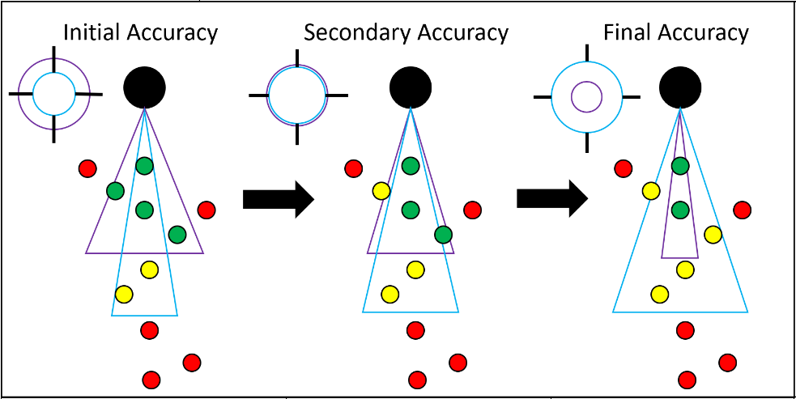

Destiny2
Le jeu est un jeu de tir en vue a la première personne multijoueur seulement. Le système de jeu combine les armes que le joueur possède et les multiples abilitées qui lui sont disponible. Étant un jeu en développement constant, des additions sont constamment ajoutées à travers les saisons et les expansions. :
Les plusieurs facettes du système de jeu
Les abilitées
Les abilitées de chacune des classes sont une partie intégral de Destiny 2 et la construction et l'optimisation de son personnage permet d'atteindre un sentiment de puissance qui est très satisfaisant
Aide à la visée
Une des raisons pourquoi Destiny 2 est tant satisfaisant à jouer est dù à l'aide à la visé que Bungie a implémenté.
Les balles vont courber dans leur trajectoire, même si les armes sont hitscans, pour atteindre leur cible si elles sont dans le cône d'angle de l'aide à la visé.
La conception sonore
La conception sonore de ce jeu est une des meilleurs que j'ai entendu,
la créativité utilisée afin de créer ces sons m'éblouit.
Voici une des trames sonores qui est la plus appréciée par la communauté